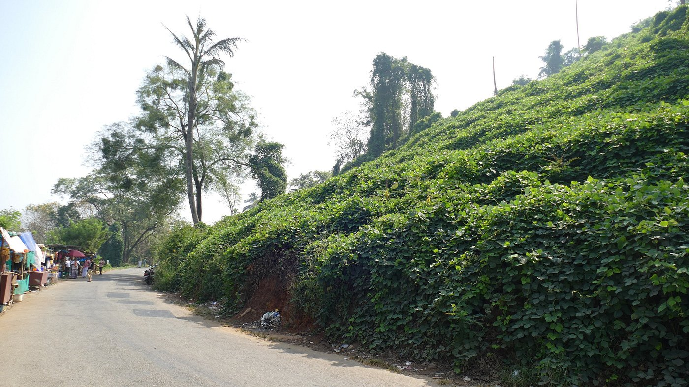

Malappuram
Bounded by the Nilgiris hills on the East and the Arabian Sea on the west, the district of Malappuram literally the land atop the hills, is remarkable for its unique natural beauty. Perched among the undulating hills and the meandering rivers that flow to reach the coconut-fringed seacoast, the land conceals a unique and eventful history.

Keralamkundu Waterfalls
A basin at the base of waterfalls where people can enjoy a dip in the pond is something everyone wants to have an experience. Keralam Kundu Waterfalls are undoubtedly the best of all Malappuram Tourist Places, and that is why people keep flocking here to have an experience of the mystical.

Arimbra Hills
Arimbra Hills or Mini Ooty is one of the most scenic places to visit in Malappuram. The place is called mini Ooty because of its resemblance to the hill station of the same name, and a rather famous one at that.
Kadalundi Bird Sanctuary
The Kadalundi Bird Sanctuary or the Kadalundi Nagaram, is definitely one of the best places to visit in Malappuram. It sits right at the spot where River Kadalundi Puzha flows into the Arabian Sea.Easily accessible from Malappuram and Kozhikode, the bird sanctuary is host to about 100 species of native birds, and about 60 species of migratory birds.